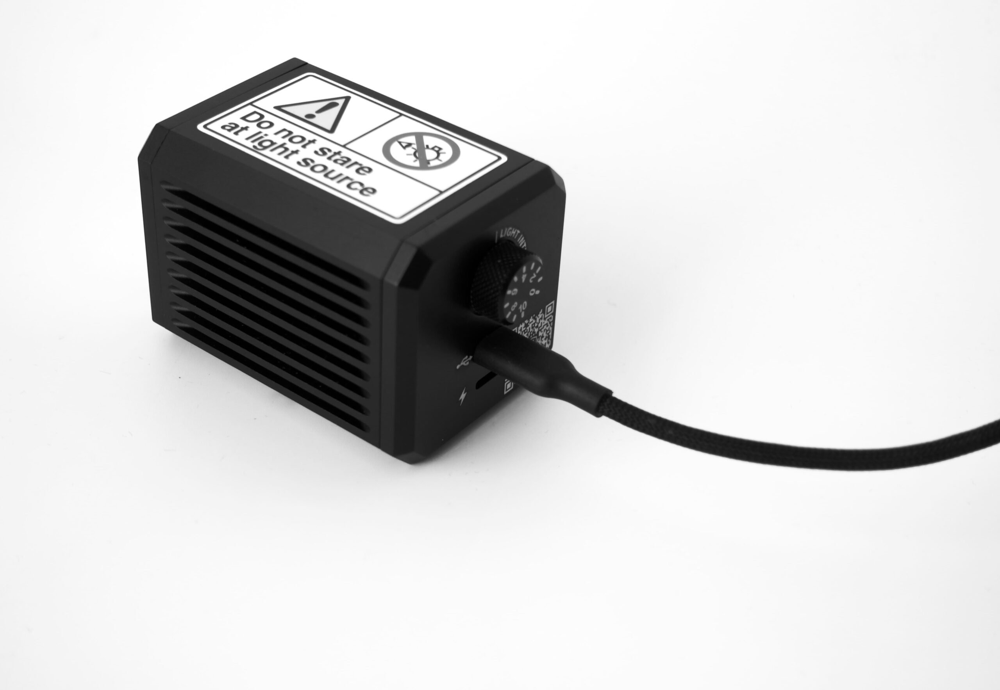
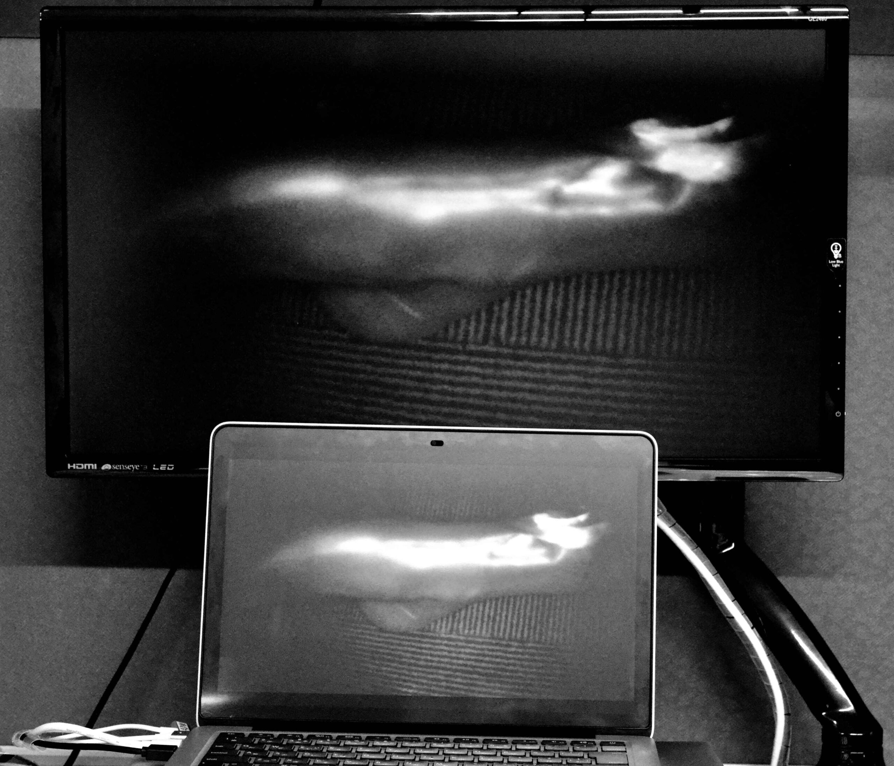
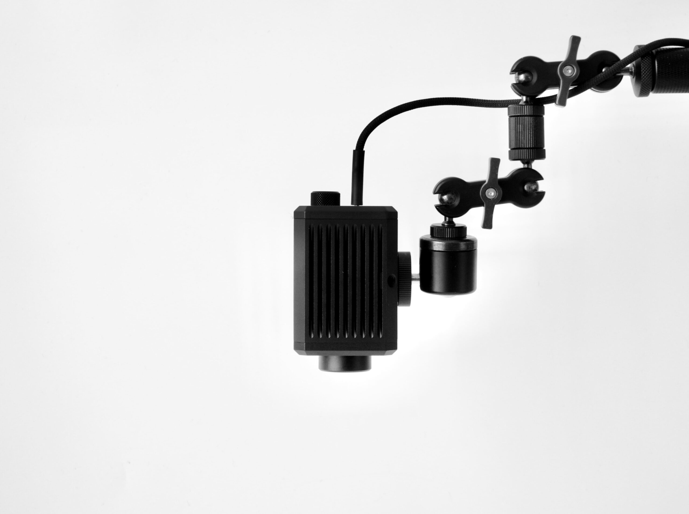
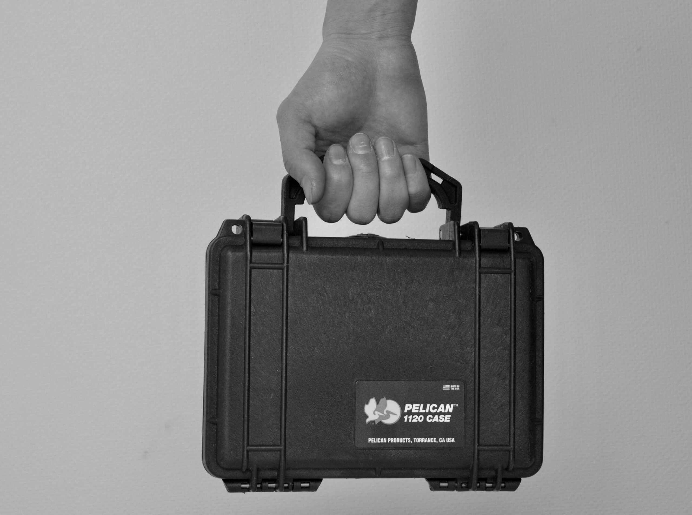

付属の3m USBケーブルでPCに接続するだけ。最大約5mまで延長可能で、柔軟な配置に対応。
画像はPCに直接保存。外部DVDやBlu-rayレコーダーは不要で、ワークフローをシンプルに。
PCから外部モニターへの出力も可能。処置中や発表時の大画面観察にも対応。
一般的な三脚に取り付け可能。固定視野での観察やハンズフリー撮影に対応。
付属のUSBケーブルでPCに接続。標準ドライバでPCに認識されるため、複雑なセットアップは不要です。
三脚に取り付けるか、手持ちで対象部位に向けます。5mのケーブル長がさまざまな場面に対応。
リアルタイムの近赤外線蛍光画像を撮影。画像はPCに即時保存され、解析・出力が可能。
実際の臨床・研究シーンでのNIRFI™の動作をご覧ください。
導入検討・調達計画のための詳細仕様情報。
| 項目 | 仕様 |
|---|---|
| 本体重量 | 約0.5kg（本体のみ） |
| 総重量（ケース込み） | 約1.5kg |
| 接続方式 | USB |
| ケーブル長 | 3m（付属）、最大約5mまで延長可能 |
| 画像保存 | PC直接保存（外部レコーダー不要） |
| 表示出力 | PCモニター／外部モニター出力対応 |
| 取り付け | 一般的な三脚マウント対応 |
| 撮像方式 | 近赤外線蛍光（NIR） |
| 電源 | USBバスパワー |
| 対応OS | Windows（詳細はお問い合わせください） |
| 用途 | 研究・専門用途における組織観察および蛍光イメージング |
※ 仕様は予告なく変更される場合があります。最新のデータシートはお問い合わせください。




外科処置中の組織灌流・リンパ排液のリアルタイム可視化。
ベッドサイド・外来・医療資源の限られた環境でも使用可能な軽量設計。
小動物イメージング・薬物送達追跡・蛍光ガイド下組織解析。
ICGなどのNIR蛍光剤による非侵襲的な血流評価。
腫瘍学的処置における蛍光ガイド下センチネルリンパ節同定。
研究室・研修プログラムに導入できる価格帯で、本格的なNIRイメージングを教育現場へ。